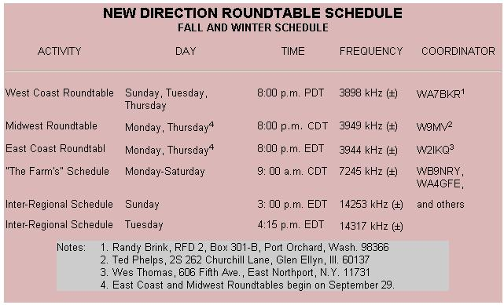

New Directions Radio
By Copthorne Macdonald
September/October 1975
by COPTHORNE
MACDONALD
NEW DIRECTIONS RADIO
As the days grow shorter and cooler, our thoughts turn toward indoor pursuits . . . including those good raps with our ham friends. And, as you can see from the accompanying timetable, this fall is bringing some major changes in our New Directions Roundtable schedules.
The emergence of localized communities of interest has led us to try three regional on-the-air gatherings patterned after the very successful West Coast Roundtable. These are planned for weekday evenings-which suit many people better than weekend days-and for 75-meter frequencies, which will give fairly reliable coverage over distances of 50 to 1,500 miles and more. Since we can expect spotty 20-meter propagation as we head into the bottom of the current sunspot cycle, the Sunday schedule on 20 meters will be used primarily for passing information from group to group.
A second point: The Roundtables need volunteers to share "moderator" duty. Contact the coordinator for your region if you'd like to help.
Also, I'm passing on herewith another installment of the Amateur Radio Register. The feedback I receive indicates that this service is being used by a good number of people for a variety of purposes. If you'd like yourself and your station listed, send me the particulars.
CITIZEN'S BAND RADIO
Many folks tend to think of ham radio and CB radio as one and the same thing. It's true that both involve two-way radio communication under personal control, and both are certainly handy tools to have in one's bag of tricks . . . but there are many differences which I'll try to point out as I go along.
Licensing. To obtain an amateur license you must pass a Morse code and radio theory test. For a C13 license, however, you need only fill out a Form 505 (available from the nearest FCC office) and send it in to the proper authorities with $4.00.
A further difference is that ham tickets are granted only to individuals, while a C13 license can be issued to either a person or to a company or association. Also, one organizational C13 permit can cover many transmitters . . . all for that single $4.00 fee.
A final-and quite important-difference is in the realm of the law. While almost all amateur band operation is by licensed hams, a good many of the C13 stations are on the air unofficially. Since talking with an unlicensed station is in itself an infraction of the rules-and since many CBers break other regulations (e.g., by not using call signs)-it's difficult to be 100% legal while operating CB . . . even if you want to.
Permitted communications. Ham radio and CB complement each other nicely in the types of communication permitted. CB is intended for local use only, and although "skip" conditions sometimes bring in stations thousands of miles away, regulations forbid talking with them. Ham radio, on the other hand, has no distance limitations . . . and no time limitations either. Amateur operators can rap for hours on end, as long as the conversation is not about any business or commercial activities. While business communications are permitted on CB, all exchanges must be brief (less than 5 minutes). Also, C13 may not be used legally for hobby-type activities in which just "making contact" with other stations is the primary aim.
There are 23 C13 channels, which act in effect as 23 party lines. Channel 9 is reserved for emergency and calling purposes only. Channels 10 through 15 and channel 23 may be used for communication between units of different stations. All channels except 9 may be used to contact units of the same station . . . the set in your home and the one in your car, for example.
In rural areas these 23 channels are sufficient except during periods of 11 skip" from distant places. ("Skip" doesn't occur a large percentage of the time at this low point in the current sunspot cycle, but will once again become a major problem a few years from now.) In many urban locations, however, all 23 channels are in use night and day, and there's widespread use of illegal high-power amplifiers in an attempt to dominate a frequency by brute force. (Unfortunately, this sort of thing happens in ham radio too.)
The range of CB communication using the maximum legal power of 4 watts output varies from quite a short distance in rough terrain where hills obstruct the signal path, up to about 20 miles where antenna locations and the nature of the countryside give a path approaching "line of sight".
Uses. In many rural areas, CB provides a much-needed radio "party line" for folks who have no telephones . . . coupled, naturally, with the party-line lack of privacy.
CB can also be a great aid to any small business which makes deliveries and pickups or is involved in other activities away from its home base. As long as there's someone back at the ranch, those who are out of the office can check periodically to learn of additional calls to be made, etc.
If you travel a lot, CB can be a boon to you too. The channel 9 emergency frequency really works for summoning aid in the event of vehicle trouble . . . and CBers are very helpful when it comes to giving directions, telling you about that "cheap but good" restaurant, etc.
Finally, CB walkie-talkies permit communication between hikers, climbers, boaters, and cyclists, or with kids at play or on the way to the school bus.
Equipment. The major considerations in selecting CB equipment are [1] basic type of unit (mobile, base station, or walkie-talkie), [2] power source (12-volt storage battery, AC, or dry cells), [31 rated transmitter power, and [4] number of channels the unit is capable of covering. This discussion considers only AM-type gear, although some SSB equipment is coming into use.
Most mobile units and base stations available these days put out between 2.5 and 4 watts. I wouldn't buy one rated at less power than this except, possibly, if I were purchasing a walkie-talkie. Considering such a device's size, weight, and battery life, one with a rating of only a watt or two might make sense. Hundred-milliwatt instruments, however, are ridiculous. They have a very short range and are more toy than tool.
If you travel often, it may be worth paying the price for a CB unit with a full 23-channel capacity . . . and thismight also make sense if you're on the urban/suburban fringe and have problems finding a usable frequency. For a rural party-line situation, as few as three channels should be adequate. (Select your particular three after checking with local CBers about the area's usage patterns.)
The obvious choice for a mobile installation is one of the many compact citizens' band units which run off 12-volt DC. Another possibility is a higher-powered walkie-talkie with an adapter cord which permits the instrument to be powered by the car's battery and connected to a whip antenna mounted on the vehicle.
Currently available base stations seem overpriced to me. A less expensive alternative-a mobile unit powered by a 12-volt storage battery and "trickle charger"-would work just as well and would continue to provide communication if the AC power failed.
Prices for good, usable transceivers range from about $60.00 per unit on up, depending on the number of channels covered and other features. One small, low-cost, 3-channel, 12-volt unit which my friend George Cummings has used for some time and found to be reliable is the Radio Shack Model TRC-9A.
CB antennas come in a wide variety of designs and sizes. Still, there's no need to overcomplicate your original choice of equipment in this area. A full-length (102-inch) whip will transmit a stronger signal in mobile use than one of the shortened "loaded" whips. For home use, if you want full 360-degree coverage, a 5/8 wavelength ground-plane antenna is a good bet. George notes that antenna problems can cause transistor failure in a transmitter, and suggests that a CBer purchase a low-cost VSWR indicator 'to make sure his antenna and feedline are OK.
Comments. A good overview of CB can be found in the October 1974 issue of Consumer Reports.
One aspect of CB-its lawless side-stirs up a fair amount of argument. To some, illegal operation is a terrible shame . . . to others, it's justifiable civil disobedience in the cause of free speech.
George-a homesteader who puts both amateur and CB radio to good use-suspects that "people like to be a little illegal. Perhaps, in our over-controlled society, some folks take this way to strike out at Big Daddy. All the same, CB is still a usable tool in many areas and more useful than ham radio for some purpose& The operators who make a mess of it are a small percentage. !f the FCC would really slap the High-Power Boys and the Channel Gobblers, life would be much nicer for the rest of us. "
An interesting new publication in the thick of the controversy is Underground Transmitter (P.O. Box 12457, Tucson, Arizona 85732, $10.00 per year). Its editors view C13 as "People's Radio", advocate removing the existing speech restrictions, and support some illegal activities while condemning others.
Here's my own view of the matter: We don't have to break the rules to do good things with radio . . . so why make ourselves vulnerable by doing so?
Peace,
Cop Macdonald (W0ORX/VE1)
2612 Windsor Street
Halifax, Nova Scotia, Canada
AMATEUR RADIO REGISTER
(FOURTH INSTALLMENT)
When circumstances permit, the following radio amateurs would like to offer the use of their stations free of charge to others. Certain of these individuals also have access to information in specific areas of interest or to people with experience in particular fields. If asked, these hams will attempt to provide information in the categories listed. Contact individuals directly to make arrangements.
PANAMA
HP1CM, Mario Controni, P.O. Box 4528, Panama 5, Panama. Class "B" (mobile); 20 and 15; SSB; phone patch. Architecture; planning; radio; engineering; travel in Latin America and Europe; private flying.
WEST
WBØEEH, Fred Zumwalt, 1740 Glenwood, Grand Junction, Colo. 81501. General; 40 through 10; CW, AM, SSB; phone patch. High school senior; futurism in education; hunting; Toffler; electronics; girls; energy independence.
EAST
WB2NEL, Larry Kahaner, 4259 Bedford Ave., Brooklyn N.Y. 11229. Advanced; 40 through 10; SSB, CW. Interested in co-authoring a book on basic technologies, particularly energy. Willing to help people prepare for ham tests.
SOUTH
WA4UXQ, Frank Fisher (M.D.), 400 Warren Crescent, Apt. 4, Norfolk, Va. 23507. Extra; 80 through 10; CW, SSB. Medicine; health care delivery; basic electronics. (Will give ham tests as schedule permits.)
WB51RK, Gaylord Hart, 5833 Velasco, Dallas, Tex. 75206. Technician; 6; SSB, AM, CW; phone patch (getting advanced license). Electronics; carpentry; literature; education and growth.
MIDWEST
WB8OTS, Jim Bronstrup, 3068 Jackfrost Way, Cincinnati, Ohio 45239. Advanced; 75 through 10; CW, SSB. Will help others get licenses. Energy; farming; ecology.
WB8SPT, Randy Livsey, 7506 Andersonville, Waterford, Mich. 48095. Advanced; 80 through 10; SSB, CW; phone patch. Organic gardening and subsistence farming; wood heat; vegetarian cooking; getting a ham license.
W9PPG, Bill Weinhardt, RR 1, Box 64, Poneto, Ind. 46781. Extra; 80 through 10; SSB and CW. Organic farming and gardening; home canning; alternative energy sources; electronics. Will teach ham radio classes.
WAØRQA, Dennis Mathias,. 4718 1/2 Calvert, Lincoln, Neb. 68506. General; 80 through 10; SSB, CW, RTTY. Wind power; solar heating.
 |
 |
|